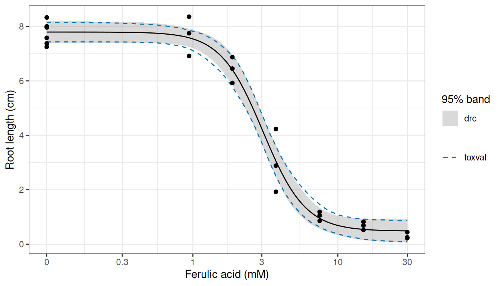
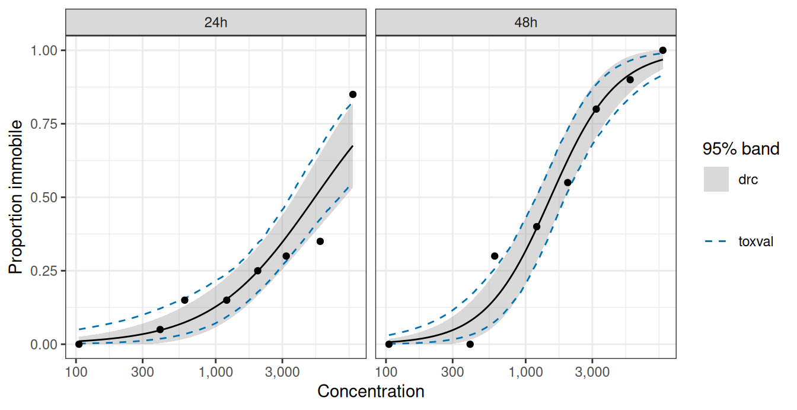
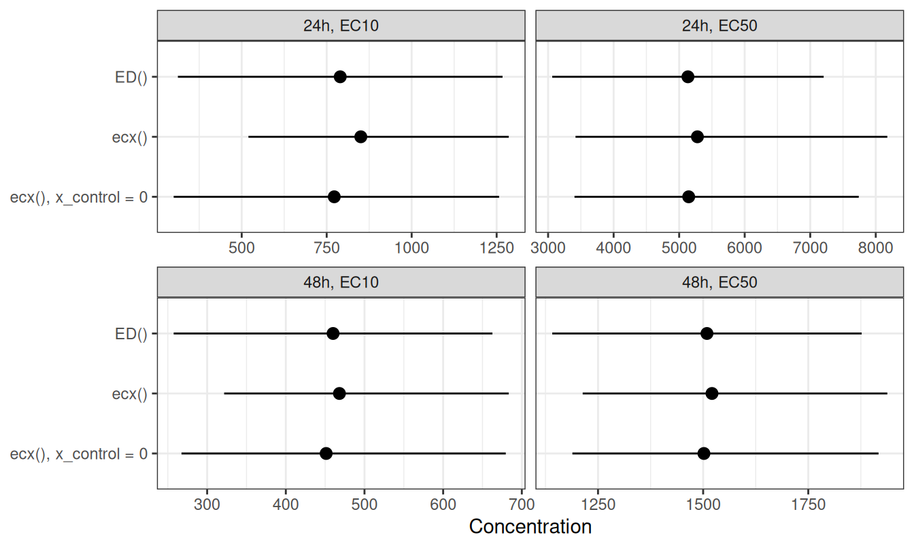

The drc package fits concentration-response curves with drm(), and estimates effect concentrations from a fitted curve with ED(). toxval’s ecx() and nsec() also accept a drm() fit, so a fitted curve can be summarised with either package. Here we fit two datasets shipped with drc and compare the estimates from each package: ryegrass, a continuous response described by one curve, and daphnids, a binomial response described by one curve for each of two exposure times. The definitions used by toxval are given in the articles on the ECx and the NSEC.
A single curve
ryegrass contains the root length (cm) of perennial ryegrass grown at 6 concentrations of ferulic acid, from 0.94 to 30 mM, and in 6 controls without it. We fitted the four-parameter log-logistic equation LL.4(), in which the response declines from an upper limit d to a lower limit c, with a slope b and with e the concentration at which the response is halfway between d and c.
fit <- drc::drm(rootl ~ conc, data = ryegrass, fct = drc::LL.4())
summary(fit)
#>
#> Model fitted: Log-logistic (ED50 as parameter) (4 parms)
#>
#> Parameter estimates:
#>
#> Estimate Std. Error t-value p-value
#> b:(Intercept) 2.98222 0.46506 6.4125 2.960e-06 ***
#> c:(Intercept) 0.48141 0.21219 2.2688 0.03451 *
#> d:(Intercept) 7.79296 0.18857 41.3272 < 2.2e-16 ***
#> e:(Intercept) 3.05795 0.18573 16.4644 4.268e-13 ***
#> ---
#> Signif. codes: 0 '***' 0.001 '**' 0.01 '*' 0.05 '.' 0.1 ' ' 1
#>
#> Residual standard error:
#>
#> 0.5196256 (20 degrees of freedom)The fitted root length declines from 7.79 cm to 0.48 cm, and is halfway between these limits at 3.06 mM.
The confidence band on the curve
Both packages give a 95% confidence band on the fitted curve, although they compute it differently. In drc, predict() with interval = "confidence" gives a band from the delta method (a linear approximation of the curve at the parameter estimates). toxval’s toxval_predict() instead draws n_boot parameter vectors (1000 by default) from a multivariate normal distribution with mean coef(fit) and covariance vcov(fit), and evaluates the curve at each vector. A parameter that the equation requires to be positive (here e) is drawn on the log scale. We refer to each evaluated curve as a realisation (i.e. a parametric bootstrap replicate), and took the band as the 2.5 and 97.5 percentiles of the realisations at each concentration. By default the realisations are evaluated at 500 concentrations from the control concentration (here 0 mM) to the highest concentration in the data, and we evaluated the drc band at these concentrations. ecx() and nsec() call toxval_predict() themselves, and the seed argument of each function makes the realisations reproducible.
pred <- toxval_predict(fit, seed = 42)
toxval_q <- apply(pred$curves[[1]], 2, quantile, probs = c(0.025, 0.975))
bands <- data.frame(
conc = pred$x_vec,
predict(fit, data.frame(conc = pred$x_vec), interval = "confidence"),
toxval_lower = toxval_q[1, ],
toxval_upper = toxval_q[2, ]
)
head(bands)
#> conc Prediction Lower Upper toxval_lower toxval_upper
#> 1 0.00000000 7.792958 7.399614 8.186303 7.431087 8.141416
#> 2 0.06012024 7.792899 7.399657 8.186140 7.431054 8.140901
#> 3 0.12024048 7.792488 7.399826 8.185149 7.430808 8.139273
#> 4 0.18036072 7.791381 7.400063 8.182699 7.430122 8.134918
#> 5 0.24048096 7.789240 7.400213 8.178266 7.428762 8.131080
#> 6 0.30060120 7.785728 7.400042 8.171413 7.426519 8.114769
p_ryegrass <- ggplot(bands, aes(conc)) +
geom_ribbon(aes(ymin = Lower, ymax = Upper, fill = "drc"), alpha = 0.3) +
geom_line(aes(y = toxval_lower, colour = "toxval"), linetype = 2) +
geom_line(aes(y = toxval_upper, colour = "toxval"), linetype = 2) +
geom_line(aes(y = Prediction)) +
geom_point(aes(y = rootl), data = ryegrass) +
scale_x_continuous(
transform = scales::pseudo_log_trans(sigma = 0.1),
breaks = c(0, 0.3, 1, 3, 10, 30),
labels = c("0", "0.3", "1", "3", "10", "30")
) +
scale_fill_manual(values = c(drc = "grey50")) +
scale_colour_manual(values = c(toxval = "#0072B2")) +
labs(x = "Ferulic acid (mM)", y = "Root length (cm)", fill = "95% band", colour = NULL) +
theme_bw()
p_ryegrass
LL.4() fit (black line), the 95% confidence band from predict() in drc (grey) and the 95% band from the toxval realisations (dashed blue lines). The concentration axis is a pseudo-logarithmic scale, which is linear near 0 and logarithmic above about 0.1 mM, so that the controls can be shown.
The drc and toxval bands are close over the observed range (Figure 1), and their limits differ by at most 0.15 cm. The largest difference is at 1.32 mM, at the start of the decline, where both limits of the toxval band are below those of the drc band.
EC10 and EC50
ED() and ecx() measure the effect from different points by default, so we matched their definitions before comparing the estimates. Both packages express the effect as a proportion of the difference between two response values. ED() uses the fitted limits d and c, so its EC10 is the concentration at which the response has fallen by 10% of d - c. ecx() takes the effect as a proportion (e.g. proportion = 0.1 for the EC10), always starts from the control (the predicted response at the lowest concentration in the data, here 0 mM), and takes the other value from its type argument. Under type = "relative" the other value is c, and because LL.4() equals d at a concentration of 0, this matches the definition used by ED(). Under the default, type = "absolute", the other value is 0, so the EC10 is the concentration at which the response is 90% of the control.
ecx_rel <- ecx(fit, proportion = c(0.1, 0.5), type = "relative", seed = 42)
ecx_rel
#> # A tibble: 4 × 10
#> # Model: drc
#> # Settings: resolution 500 | 1000 bootstrap realisations
#> metric direction estimate conf.low conf.high proportion type control
#> <chr> <chr> <dbl> <dbl> <dbl> <dbl> <chr> <dbl>
#> 1 ecx decreasing 1.45 1.01 1.82 0.1 relative 7.80
#> 2 ecx increasing NA NA NA 0.1 relative NA
#> 3 ecx decreasing 3.06 2.71 3.43 0.5 relative 7.80
#> 4 ecx increasing NA NA NA 0.5 relative NA
#> # ℹ 2 more variables: reference <dbl>, asymptote <dbl>
ecx_abs <- ecx(fit, proportion = c(0.1, 0.5), seed = 42)
ecx_abs
#> # A tibble: 4 × 10
#> # Model: drc
#> # Settings: resolution 500 | 1000 bootstrap realisations
#> metric direction estimate conf.low conf.high proportion type control
#> <chr> <chr> <dbl> <dbl> <dbl> <dbl> <chr> <dbl>
#> 1 ecx decreasing 1.48 1.03 1.87 0.1 absolute 7.80
#> 2 ecx increasing NA NA NA 0.1 absolute 7.80
#> 3 ecx decreasing 3.19 2.87 3.55 0.5 absolute 7.80
#> 4 ecx increasing NA NA NA 0.5 absolute 7.80
#> # ℹ 2 more variables: reference <dbl>, asymptote <dbl>ecx() returns a row for each direction of change. Because this curve only declines, the increasing rows are NA. The reference column gives the response at which each ECx is read, and the control column the response it is measured from.
from_ecx <- function(res, method) {
dec <- res[res$direction == "decreasing", ]
data.frame(
method,
effect = paste0("EC", 100 * dec$proportion),
estimate = dec$estimate,
lower = dec$conf.low,
upper = dec$conf.high
)
}
ec_ryegrass <- rbind(
data.frame(
method = "ED()",
effect = c("EC10", "EC50"),
estimate = ed[, "Estimate"],
lower = ed[, "Lower"],
upper = ed[, "Upper"],
row.names = NULL
),
from_ecx(ecx_rel, "ecx(), relative"),
from_ecx(ecx_abs, "ecx(), absolute")
)
ec_ryegrass
#> method effect estimate lower upper
#> 1 ED() EC10 1.463706 1.074109 1.853302
#> 2 ED() EC50 3.057955 2.670526 3.445384
#> 3 ecx(), relative EC10 1.448839 1.006625 1.818876
#> 4 ecx(), relative EC50 3.056538 2.706619 3.427224
#> 5 ecx(), absolute EC10 1.481375 1.029068 1.870459
#> 6 ecx(), absolute EC50 3.194687 2.867163 3.545310
ggplot(ec_ryegrass, aes(estimate, method)) +
geom_pointrange(aes(xmin = lower, xmax = upper)) +
facet_wrap(~effect, scales = "free_x") +
scale_y_discrete(limits = rev(unique(ec_ryegrass$method))) +
labs(x = "Ferulic acid (mM)", y = NULL) +
theme_bw()Under the matched definition, the two packages return very similar results: ecx() gives an EC10 of 1.45 mM and an EC50 of 3.06 mM, compared with 1.46 and 3.06 mM from ED() (Figure 2). The default ecx() estimates are higher (1.48 and 3.19 mM), because its EC10 is read at a lower response (7.02 cm, compared with 7.06 cm under relative). These reference responses differ by a tenth of the lower limit c, so the difference between the absolute and relative estimates would be larger for a curve with a higher lower limit. For these data c is small compared with d (0.48 against 7.79 cm), and the absolute and relative intervals overlap for both estimates.
The intervals differ because the packages convert the uncertainty in the parameters into an interval on the ECx in different ways, although both take that uncertainty from vcov(fit). The delta method used by ED() replaces the ECx by its linear approximation at the parameter estimates. This gives a standard error, and an interval of the estimate plus or minus 2.09 standard errors (the 0.975 quantile of a t distribution on 20 residual degrees of freedom), which is symmetric by construction. ecx() instead finds the ECx of each realisation and returns the median and the 2.5 and 97.5 percentiles of these values. Its interval can therefore be asymmetric where the ECx is a nonlinear function of the parameters. For example, the relative EC10 interval extends 0.44 mM below the estimate and 0.37 mM above it, whereas the ED() interval extends 0.39 mM on each side. The point estimates also differ slightly, because ED() gives the ECx at the parameter estimates whereas ecx() gives the median over the realisations.
The ecx() limits are percentiles of a finite set of realisations, so they change slightly with the seed. A larger n_boot reduces this variation, although the computation then takes longer.
NSEC
The no-significant-effect concentration (NSEC) is the concentration at which the fitted response departs from the control by more than the uncertainty in the control allows. drc does not provide a method for estimating the NSEC from a fitted model, and this is one of the motivations for the development of toxval. nsec() takes as its reference the 0.01 quantile (set by sig_val) of the control across the realisations, finds the concentration at which each realisation crosses that reference, and summarises these concentrations as for ecx().
ns <- nsec(fit, seed = 42)
ns
#> # A tibble: 2 × 14
#> # Model: drc
#> # Settings: resolution 500 | 1000 bootstrap realisations
#> metric direction estimate conf.low conf.high sig_val type anchor control
#> <chr> <chr> <dbl> <dbl> <dbl> <dbl> <chr> <chr> <dbl>
#> 1 nsec decreasing 1.18 0.637 1.52 0.01 absolute model 7.80
#> 2 nsec increasing NA NA NA 0.01 absolute model 7.80
#> # ℹ 5 more variables: reference <dbl>, asymptote <dbl>, ecnsec <dbl>,
#> # ecnsec.low <dbl>, ecnsec.high <dbl>
ns_dec <- ns[ns$direction == "decreasing", ]
p_ryegrass +
annotate(
"rect",
xmin = ns_dec$conf.low, xmax = ns_dec$conf.high, ymin = -Inf, ymax = Inf,
fill = "#D55E00", alpha = 0.2
) +
geom_vline(xintercept = ns_dec$estimate, colour = "#D55E00") +
geom_hline(yintercept = ns_dec$reference, linetype = 3)The NSEC is 1.18 mM (0.64 to 1.52), the concentration at which the curve falls below the reference of 7.37 cm (Figure 3). This is below the EC10 of 1.45 mM, and the ecnsec column gives the effect at the NSEC as a proportion of the control, here 5.5%.
drc also provides equations with a threshold (e.g. NEC.3()), in which the response is constant up to a no-effect concentration (NEC) that is estimated as the parameter e. nsec() does not accept fits of these equations.
A grouped fit
daphnids contains the number of immobile daphnids out of 20 at 8 concentrations of a toxic substance, from 105 to 9,596, counted after 24 h and again (in the same animals) after 48 h. Because the response is a count out of a known total, we fitted the two-parameter log-logistic equation LL.2() with type = "binomial" and the total as weights, with one curve per exposure time (curveid = time). LL.2() fixes the lower limit at 0 and the upper limit at 1, so the fitted response is the proportion immobile.
daphnids <- drc::daphnids
fit_daph <- drc::drm(
no / total ~ dose,
weights = total,
curveid = time,
data = daphnids,
fct = drc::LL.2(),
type = "binomial"
)
ed_daph <- drc::ED(fit_daph, c(10, 50), interval = "delta")
#>
#> Estimated effective doses
#>
#> Estimate Std. Error Lower Upper
#> e:24h:10 789.83 243.66 312.25 1267.40
#> e:24h:50 5134.03 1056.74 3062.86 7205.21
#> e:48h:10 460.06 103.37 257.46 662.65
#> e:48h:50 1509.07 187.76 1141.06 1877.07In ecx(), the column passed to drm() as curveid is given in group_var, and the result has one set of rows per curve, identified by the group column.
ecx_daph <- ecx(fit_daph, proportion = c(0.1, 0.5), group_var = "time", seed = 42)
ecx_daph
#> # A tibble: 8 × 11
#> # Model: drc
#> # Settings: resolution 500 | 1000 bootstrap realisations
#> metric direction group estimate conf.low conf.high proportion type control
#> <chr> <chr> <fct> <dbl> <dbl> <dbl> <dbl> <chr> <dbl>
#> 1 ecx decreasing 24h NA NA NA 0.1 absolu… 0.0102
#> 2 ecx increasing 24h 850. 520. 1286. 0.1 absolu… 0.0102
#> 3 ecx decreasing 24h NA NA NA 0.5 absolu… 0.0102
#> 4 ecx increasing 24h 5279. 3418. 8176. 0.5 absolu… 0.0102
#> 5 ecx decreasing 48h NA NA NA 0.1 absolu… 0.00727
#> 6 ecx increasing 48h 468. 322. 683. 0.1 absolu… 0.00727
#> 7 ecx decreasing 48h NA NA NA 0.5 absolu… 0.00727
#> 8 ecx increasing 48h 1521. 1214. 1938. 0.5 absolu… 0.00727
#> # ℹ 2 more variables: reference <dbl>, asymptote <dbl>Because the proportion immobile rises with concentration, the estimates are in the increasing rows. ED() takes the increasing effect as a proportion of the difference between c and d, which LL.2() fixes at 0 and 1. Unlike the ryegrass fit, this fit does not need type = "relative" for ecx() and ED() to agree. For ryegrass the packages differed in the value the response falls towards (0 for the default ecx() and c for ED()), and type = "relative" replaced 0 by c. Here, for a response on the proportion scale, the default type = "absolute" already takes the value the response rises towards as 1, which is also the upper limit d of LL.2(), so type = "relative" returns identical estimates and intervals. The packages differ instead in the value the response rises from. ecx() starts from the control, the predicted proportion immobile at the lowest tested concentration (105), which is 0.0102 at 24 h and 0.0073 at 48 h, whereas ED() starts from c = 0. The type argument does not change the control, but x_control does: supplying x_control = 0 predicts the control at a concentration of 0, where LL.2() equals 0, and the definitions then coincide.
ecx_daph0 <- ecx(
fit_daph,
proportion = c(0.1, 0.5),
group_var = "time",
x_control = 0,
seed = 42
)
#> Warning: `x_control`, 0, lies outside the range of the data, 105 to 9595.57, so
#> the control response is predicted at a concentration that was not tested.
#> Warning: Some realisations have no crossing within the evaluated range, so a reported quantile is at the highest concentration, or have no reference and were excluded. Consider a wider `x_range`.
#> * group 24h, decreasing: 100.0% excluded
#> * group 24h, decreasing: 100.0% excluded
#> * group 48h, decreasing: 100.0% excluded
#> * group 48h, decreasing: 100.0% excludedThe call gives two warnings. The first is that 0 is outside the tested concentrations, so the control is a prediction beyond the data. The second is that the decreasing rows have no reference, because a proportion cannot fall below a control of 0.
from_ecx_group <- function(res, method) {
inc <- res[res$direction == "increasing", ]
data.frame(
time = inc$group,
method,
effect = paste0("EC", 100 * inc$proportion),
estimate = inc$estimate,
lower = inc$conf.low,
upper = inc$conf.high
)
}
ec_daph <- rbind(
data.frame(
time = sub("e:(.*):.*", "\\1", rownames(ed_daph)),
method = "ED()",
effect = paste0("EC", sub(".*:", "", rownames(ed_daph))),
estimate = ed_daph[, "Estimate"],
lower = ed_daph[, "Lower"],
upper = ed_daph[, "Upper"],
row.names = NULL
),
from_ecx_group(ecx_daph, "ecx()"),
from_ecx_group(ecx_daph0, "ecx(), x_control = 0")
)
ec_daph <- ec_daph[order(ec_daph$time, ec_daph$effect), ]
ec_daph
#> time method effect estimate lower upper
#> 1 24h ED() EC10 789.8286 312.2547 1267.4026
#> 5 24h ecx() EC10 850.4098 519.7638 1285.6880
#> 9 24h ecx(), x_control = 0 EC10 772.2386 299.8786 1257.2804
#> 2 24h ED() EC50 5134.0334 3062.8573 7205.2096
#> 6 24h ecx() EC50 5278.6408 3418.3560 8176.2273
#> 10 24h ecx(), x_control = 0 EC50 5145.5089 3402.7063 7740.6662
#> 3 48h ED() EC10 460.0561 257.4614 662.6508
#> 7 48h ecx() EC10 468.1586 321.6026 683.4182
#> 11 48h ecx(), x_control = 0 EC10 451.2740 267.3729 679.6199
#> 4 48h ED() EC50 1509.0654 1141.0624 1877.0684
#> 8 48h ecx() EC50 1521.0104 1213.5145 1937.9812
#> 12 48h ecx(), x_control = 0 EC50 1501.8363 1188.9885 1917.1159
pred_daph <- toxval_predict(fit_daph, group_var = "time", seed = 42)
bands_daph <- do.call(rbind, lapply(seq_along(pred_daph$curves), function(i) {
time <- as.character(pred_daph$keys$group[i])
q <- apply(pred_daph$curves[[i]], 2, quantile, probs = c(0.025, 0.975))
data.frame(
dose = pred_daph$x_vec,
time,
predict(fit_daph, data.frame(dose = pred_daph$x_vec, time = time), interval = "confidence"),
toxval_lower = q[1, ],
toxval_upper = q[2, ]
)
}))
ggplot(bands_daph, aes(dose)) +
geom_ribbon(aes(ymin = Lower, ymax = Upper, fill = "drc"), alpha = 0.3) +
geom_line(aes(y = toxval_lower, colour = "toxval"), linetype = 2) +
geom_line(aes(y = toxval_upper, colour = "toxval"), linetype = 2) +
geom_line(aes(y = Prediction)) +
geom_point(aes(y = no / total), data = daphnids) +
facet_wrap(~time) +
scale_x_log10(breaks = c(100, 300, 1000, 3000), labels = scales::label_comma()) +
scale_fill_manual(values = c(drc = "grey50")) +
scale_colour_manual(values = c(toxval = "#0072B2")) +
labs(x = "Concentration", y = "Proportion immobile", fill = "95% band", colour = NULL) +
theme_bw()
LL.2() fit (black line), the 95% confidence band from predict() in drc (grey) and the 95% band from the toxval realisations (dashed blue lines). The concentration axis is logarithmic.
The drc and toxval bands are close in the steep part of each curve (Figure 4). However, at the lowest concentration the upper limit of the toxval band is higher, at 0.050 compared with 0.026 at 24 h. This appears to be because the delta-method band is symmetric about the curve, whereas the realisations are bounded below by 0 and skewed upwards where the fitted proportion is near 0.
ggplot(ec_daph, aes(estimate, method)) +
geom_pointrange(aes(xmin = lower, xmax = upper)) +
facet_wrap(~ time + effect, scales = "free_x", ncol = 2, labeller = label_wrap_gen(multi_line = FALSE)) +
scale_y_discrete(limits = rev(unique(ec_daph$method))) +
labs(x = "Concentration", y = NULL) +
theme_bw()
LL.2() fits to daphnids at 24 h (top) and 48 h (bottom), from ED() and from ecx() with the control at the lowest tested concentration and at 0. Points: the estimates. Lines: the 95% intervals, from the delta method for ED() and from the 2.5 and 97.5 percentiles of 1000 realisations for ecx().
With the control at 0, the ecx() EC50s are within 0.5% of the ED() values and the EC10s within 2.2% (Figure 5). The remaining difference is likely to come from the point estimate, which for ecx() is the median of the realisations. With the control at the lowest tested concentration, the EC10s differ from ED() by up to 7.7%, because the small proportion immobile at that concentration raises the response at which the EC10 is read. The intervals differ in shape as for ryegrass. For example, the 24 h EC50 interval from ecx() with the control at 0 runs from 3,403 to 7,741, and extends further above the estimate than below it, whereas the delta-method interval from ED() runs from 3,063 to 7,205 and is symmetric.
Provenance
cat(sprintf("%-10s %s\n", "toxval", as.character(packageVersion("toxval"))))
toxval 2.0.0
cat(sprintf("%-10s %s\n", "commit", toxval_commit))
commit 94c21a5dcc3ba32526f83e42bbbbf27899252323
for (pkg in c("drc", "ggplot2")) {
cat(sprintf("%-10s %s\n", pkg, as.character(packageVersion(pkg))))
}
drc 4.0.0
ggplot2 4.0.3
cat(sprintf("%-10s %s\n", "R", getRversion()))
R 4.6.2- Data:
ryegrassanddaphnidsfrom thedrcpackage, used as shipped. - Fits:
drm()with its default starting values. - Realisations:
n_boot = 1000parametric bootstrap draws withseed = 42. - Grid: toxval’s default of 500 evenly spaced concentrations from the control concentration to the highest concentration in the data.
- The commit line is the commit of the toxval checkout the article was rendered from.